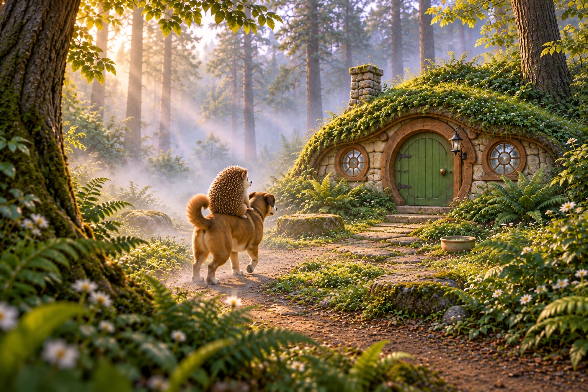

Original and published image
Same illustration, same 1536 × 1024 pixels. The published WebP is 82.3% smaller. It uses lossy compression at quality setting 92, not a smaller-resolution image. That setting does not mean 92% of the original quality is preserved.


Character and foliage detail
The source and published files both match the SHA-256 hashes recorded in the export manifest. These are the existing files, not newly generated or recompressed examples. This local review page is excluded from GitHub Pages.
What GitHub Pages serves
| Production assets | Files | Size |
|---|---|---|
| Original book illustrations | 100 | 188.6 MB |
| New five-chapter collection | 181 | 86.1 MB |
| Atlas assets | 95 | 146.2 MB |
| Other production art and assets | 126 | 331.0 MB |
GitHub Actions builds a static site from the repository. Pages serves its HTML, styles, JavaScript, story text, and selected production assets. The deployment totals about 756 MB; a visitor does not download the whole deployment. Reader images below the viewport load lazily.
Production media currently includes PNG, WebP, MP4, and atlas data. Pages serves the encoded files as built; it does not run our image compression. Hugging Face holds verified archived assets, not the images requested by the published reader.